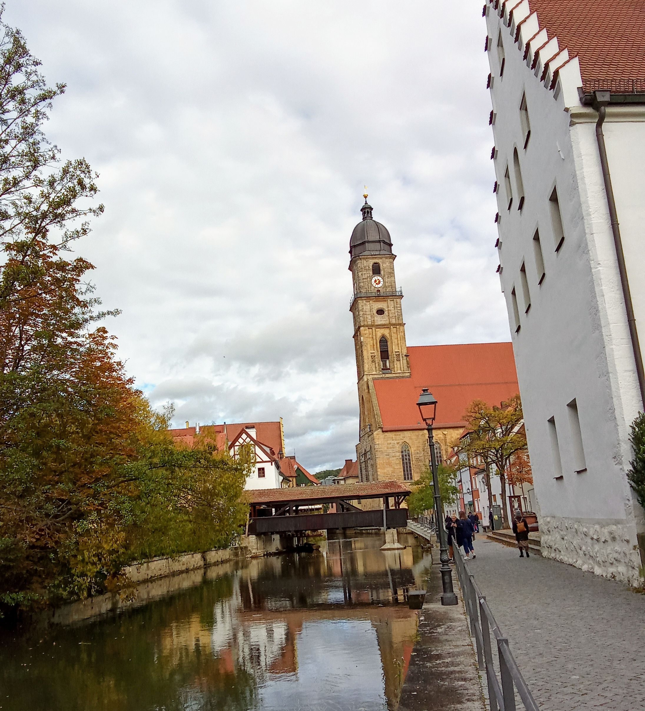
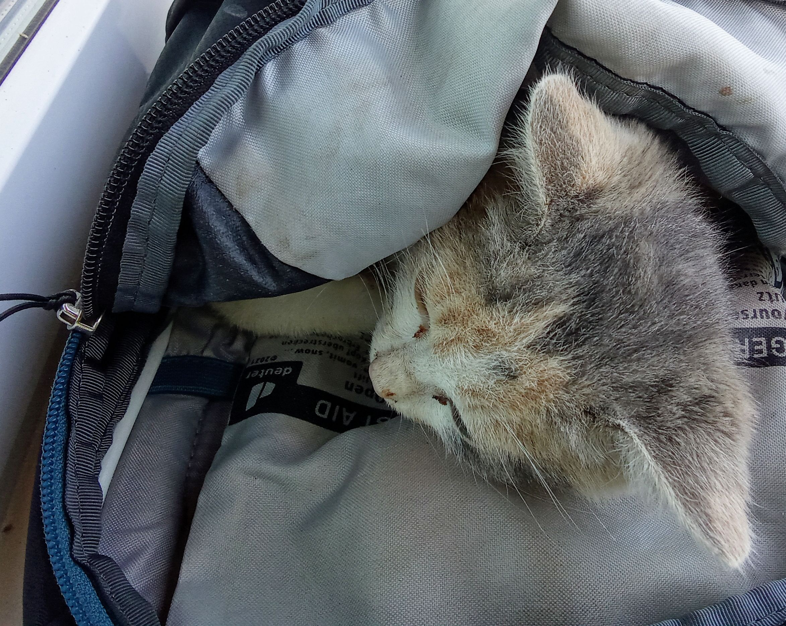

21.10.2023 Prag - Amberg - Haßloch

Bin ich ganz müde morgens und will gar nicht mehr anhalten zum Fahrradfahren auf dem Weg nach Hause.
Nach etwas fahren und Miss Monique hören steigt dann doch die Stimmung und ich fahre bei Amberg von der Autobahn.
Die Sonne scheint und es findet sich sofort ein sehr gut ausgebauter Fahrradweg in die Stadt. Hurra.
Leider kommen schnell die Wolken und in der Stadt sinkt die Stimmung wieder.
Naja die Currysuppe und der Burger waren gut und später fahre ich sogar noch ein extra Meter nach Süden.
Auf der Heimfahrt fallen mir die Augen zu und ich schlafe eine halbe Stunde.
Bei Ankunft völlig druff dank Miss Monique und Kaffee aber ich freue mich meine Frau zu sehen.
15.10.2023 Die arme kleine Katze

... lag in einer kurve
voller fliegen aber trotzdem nicht tot
sie konnte nicht mehr laufen und schrie
es war schon klar, dass es keine hoffnung gab
aber ich wollte das nicht selber machen
1000 fliegen saßen auf ihrem hinterteil und sie kämpfte mit denen im Gesicht.
blöde fliegen
erst spät verstand ich dass sie nach mir schrie
sie zog sich mit den gesunden vorderfüßen
über den boden bis sie zwischen meinen beinen war
dann schrie sie nicht mehr. hilf mir bitte.
hilf mir bitte. und sie schnurrte.
kein auto - slovake oder ukrainer - wollte helfen
aber Miro fand ein Krankenhaus in Kosice
da packte ich sie in den rucksack
es war ihr gar nicht unrecht, sie schaute nur. hilf mir.
nur 4,5 km. der anfang ging sehr schnell aber das
blöde Krankenhaus mußte ja auf einen berg gebaut werden
schneller wärs gewesen erst an auto zu fahren ... zu spät gemerkt
aber wofür eigentlich die Eile? Es wartete ja doch nur der Tod
Beide Hinterbeine gebrochen und der Rücken auch ... der after war schlaf
Euthansie wie der Arzt meinte wäre das Mittel der Wahl
Sie bekam eine Spritze zum Schlafen und nach einem kleinen Smalltalk
sollte ich das Zimmer verlassen.
Hätte ich bleiben sollen?
Aber die Arzthelferinnen haben sie gehalten.
Sie war so froh, dass endlich jemand hilft.
Und warum haben wir nicht Schmerzmittel und einen halben Tag gegeben.
Sie war ja froh dass jemand bei ihr war.
Ihr Vorderfuß war rasiert. Von einem Tierarzt. Was war ihre Geschichte?
Auf der Heimfahrt von Kosice nach Humenne lief eine Katze über die Straße
Der Slovake auf der Gegenspur hat nicht gebremst.
Sie drehte im letzten Moment um sonst wär auch sie unter die Räder gekommen.
Ich habe abends meinen Rucksack gewaschen.
Er roch nach der Kot und Verwesung.
Ich habe sie nur kurz gekannt aber sie wollte so unbedingt meine Nähe.
Was mache ich nur.
Will ich mein Leben mit Computerspielen, Felsen und Drogen verbringen?